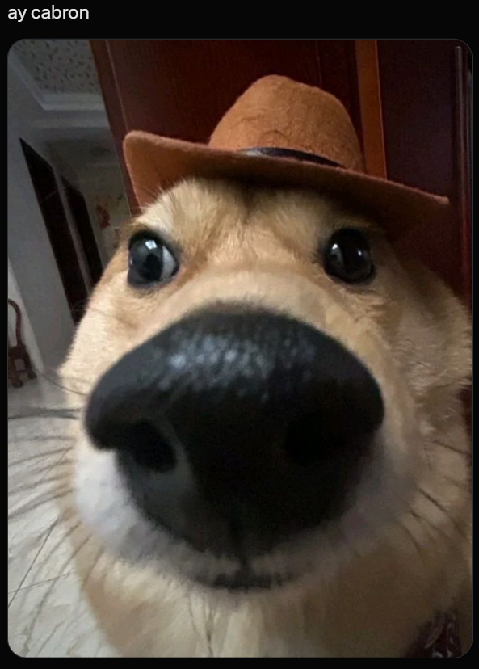

so my dog thinks hes a cat and my cat thinks shes a mailbox and honestly at this point im just letting it happen. the dog meows now its bad hes really committed to the bit. the cat sits by the door every day waiting for letters that dont exist she has never once received mail she is not even addressed to anyone. anyway this website was coded entirely by paw taps my dog wrote the css hes actually pretty good with margins surprisingly bad with commitment. the cat reviewed it and rejected everything by knocking my mouse off the desk seven times. we are currently in a stalemate. i think the dog might be part cat and the cat might be part router because sometimes she just stops working for no reason and needs to be restarted with snacks. thanks for visiting idk what this site is for anymore neither does the dog neither does the mailbox cat.